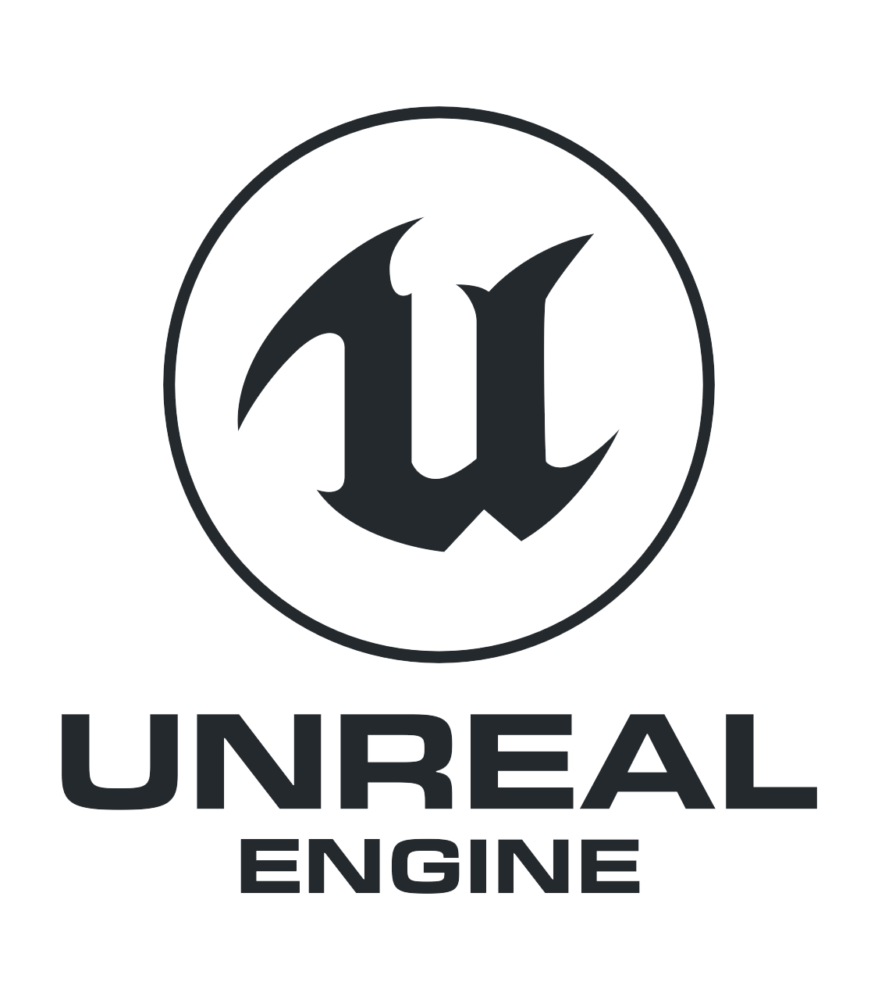

| image |
nombre |
creado por |
dscripcion |
|
Game Maker Studio |
Mark Overmars |
Motor De Desarrollo De Videojuegos GameMaker Studio (anteriormente llamado Animo, Game Maker y GameMaker) es una plataforma basada en un lenguaje de programación interpretado y un kit de desarrollo de software (SDK) para desarrollar videojuegos, creada originalmente por el profesor Mark Overmars en el lenguaje de programación Delphi, y orientada a usuarios novatos o con pocas nociones de programación. El programa es de pago, aunque existe una versión de prueba con todas las características, durante 30 días. Overmars hizo pública la primera versión del programa el 15 de noviembre de 1999. |
 |
godot |
juan liniestky; ariel manzur |
motor de videojuegos 2D y 3D Godot es un motor de videojuegos 2D y 3D multiplataforma, libre y de código abierto, publicado bajo la Licencia MIT y desarrollado por la comunidad de Godot. El motor es funcional en sistemas Windows, OS X, Linux y BSD y también está disponible una versión experimental del motor para Android que actualmente no cuenta con soporte para pantallas táctil. Godot permite exportar los videojuegos creados a PC (Windows, OS X y Linux), teléfonos móviles (Android, iOS), y HTML5. |
 |
Unity |
Unity Technologies/td>
| Unity es un motor de videojuego multiplataforma creado por Unity Technologies. Unity está disponible como plataforma de desarrollo para Microsoft Windows, Mac OS, Linux. La plataforma de desarrollo tiene soporte de compilación con diferentes tipos de plataformas (Véase la sección Plataformas objetivo). A partir de su versión 5.4.0 ya no permite el desarrollo de contenido para navegador a través de su plugin web, en su lugar se utiliza WebGL. Unity tiene dos versiones: Unity Professional (pro) y Unity Personal. |
|  |
unreal engine |
Tim Sweeney |
Unreal Engine (UE) is a 3D computer graphics game engine developed by Epic Games, first showcased in the 1998 first-person shooter game Unreal. Initially developed for PC first-person shooters, it has since been used in a variety of genres of games and has seen adoption by other industries, most notably the film and television industry. Unreal Engine is written in C++ and features a high degree of portability, supporting a wide range of desktop, mobile, console, and virtual reality platforms. |